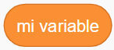
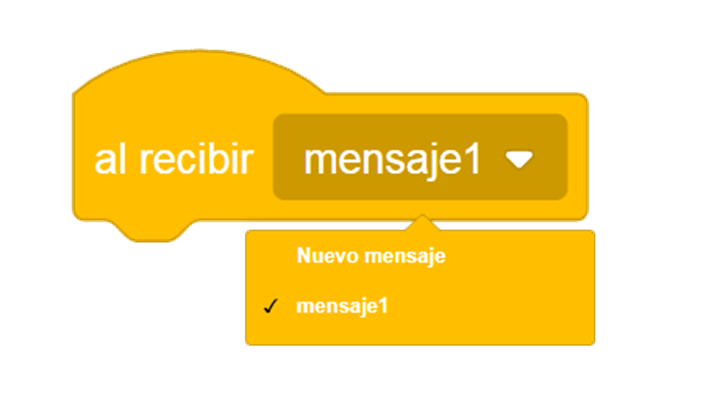
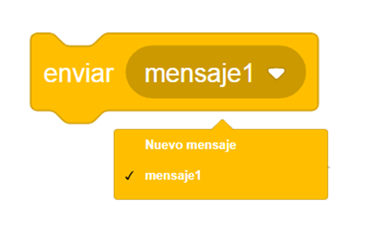
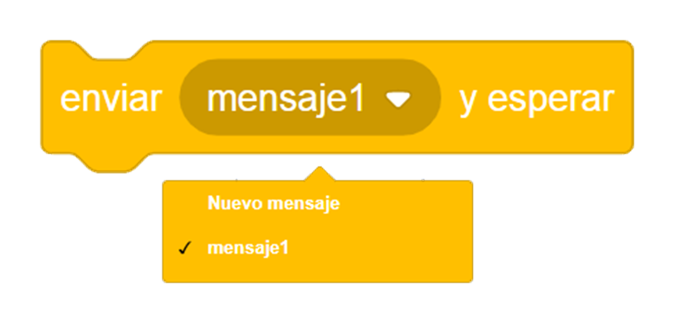

En un proyecto con varios elementos (fondos y objetos) suele ser necesaria la comunicación entre estos. Para ello, se puede hacer uso de dos tipos de elementos: las variables globales y el envío de mensajes.
Programación de videojuegos con Scratch
Variables e interacción de objetos
Variables
En Scratch, las variables se representan con bloques que tienen forma de círculos alargados. 
Las variables pueden ser locales o globales. En Scratch, una variable local solo la puede usar un objeto. Por otra parte, una global la pueden usar todos los objetos.
Por tanto, sólo podremos emplear la comunicación con otros elementos del proyecto mediante el uso de variables globales, por lo que puede ser más interesante el uso de mensajes para llevar a cabo dichas comunicaciones.
Envío y recepción de mensajes
La forma más usual de comunicación entre objetos (o incluso fondos) es mediante la funcionalidad de eventos de envío y recepción de mensajes. Dentro de la categoría de eventos encontramos:
|  |
Este bloque activa los script de debajo cuando recibe un mensaje enviado por un script de llamada. Si el mismo mensaje se envía de nuevo mientras el script está todavía en ejecución, el script se reiniciará sin llegar a los bloques del final. Además, este mensaje puede ser recibido por varios elementos a la vez. |
|  |
Este bloque envía una mensaje a todo el programa de Scratch. Se activarán todos los scripts de cualquier objeto o fondo que tengan el bloque «al recibir …». Este bloque permite que los scripts envíen mensajes sin ninguna espera en su script. Los envíos de mensajes son una buena manera de hacer que los elementos de un proyecto se comuniquen. |
|  |
Es similar al bloque antenior, pero este bloque envía un mensaje a todo el proyecto de Scratch y espera hasta que todos los scripts activados por el envío terminen y dejen de ejecutarse. |
Obra publicada con Licencia Creative Commons Reconocimiento Compartir igual 4.0